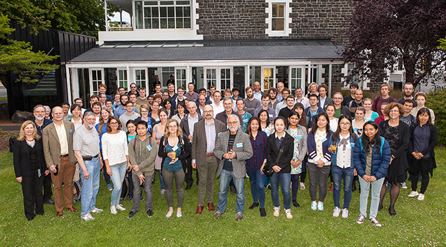

The Dodd-Walls Centre is a national Centre of Research Excellence (CoRE) involving six NZ universities, hosted by the University of Otago.
The DWC has 224 members, approximately half of whom are research students. Our research income includes base CoRE funding from the Tertiary Education Commission along with other funding from government and the private sector.
DWC 2018 Symposium
For further details on the upcoming Dodd-Walls Symposium - 26 - 29 June 2018 in Auckland.
http://www.auckland.ac.nz/dwc2018
DWC Diversity
The Dodd-Walls Centre is committed to principles of equality and diversity. These principles are integral to our desire to promote excellence in science and effectively engage with society.
Read more about our Diversity strategy
DWC History
Heroes in the World of Science: The history of the Dodd-Walls Centre is an untold story of kiwi pioneering.
DWC Research Publications
Read the full list of DWC Research Publications
DWC Centre Information and Downloads
- DWC 2017 Annual Report
- DWC 2016 Annual Report
- DWC Mission and Strategy
- DWC 2016 Facts and Figures
- DWC Centre Structure
DWC Year 4-6 Research and Activity Plan
The Dodd-Walls Centre for Photonic and Quantum Technologies
Three Year Plan, 2018–2020
Who we are
The Dodd-Walls Centre for Photonic and Quantum Technologies is a world-class collaborative research network building on New Zealand’s internationally acknowledged strength in the fields of quantum optics, photonics and precision atomic physics.
The Centre’s research programme undertakes cutting-edge research to generate fundamental knowledge about how the physical universe is composed and behaves. Alongside this research focus, the Centre educates and trains highly skilled individuals for New Zealand’s high-value-added technological future.
The Dodd-Walls Centre’s mission is:
• to create a research centre that is recognised as one of the world’s leading organisations in the field of photonic and quantum technologies.
• to build upon the acknowledged strength of New Zealand in the areas of non-linear and quantum optics and precision atomic physics.
• to train and develop skilled staff and students to the highest international standards.
• to help develop the high-tech industry sector, thus ensuring economic growth and continued career pathways in New Zealand.
The impact of our programme in the period 2015–2017 has already delivered towards our mission and strategic outcomes and this will continue through the next three years of the Centre’s activities.
2018–2020 research programme
Theme 1a Photonic sensing and imaging
Background: We work to produce the next generation of sensors and imaging systems needed for scientific and industrial applications. This will be done by extending the current understanding of the fundamental ways that light and sound interact with matter and then using this to construct new sensors and imaging systems that solve specific problems in three fields: biomedical, geophysics and primary industries. The three year research programme includes:
• Fundamental physics of imaging and sensing techniques including optical coherence tomography (OCT), photo-acoustic tomography (PAT), Laser Doppler vibrometry (LDV), spectroscopy, fluorescence, Raman microscopy, microresonators and THz sensing.
• Building a fibre thermometer for measuring temperature along the Alpine Fault (SI3).
• Apply vibrational spectroscopic methods (Raman, mid- and near-infrared) and OCT to a range of samples such as meat, cartilage, milk and fruits to develop new optical probes.
• Develop machine learning techniques for various image segmentation and image interpretation tasks and signal processing in general.
Theme 1b Photonic sources and components
Background: We aim to produce the next generation of light sources needed for scientific and industrial applications. This will be done by extending our understanding of the basics of light propagation in optically active and nonlinear materials and using this to construct new lasers and parametric sources of light over a broad wavelength range from the near-infra-red to the mid-infra-red. The three year research programme includes:
• Generation of wide bandwidth optical signals and the generation of frequency combs spanning the mid-IR.
• Novel fabrication techniques for microresonators.
• Trace-level gas detection using widely-tuneable microresonator sources.
• Develop novel methods of generation and investigate frequency combs for precision measurement.
• Numerical modelling of non-linear optical systems.
Theme 2a Quantum fluids and gases
Background: We conduct fundamental research to improve knowledge of the physics of condensed matter and quantum many-body physics. This is done through experimental and theoretical work on ultra-cold atomic gases. For the period 2018–2020 we will work to understand and manipulate novel spin fluids, emulate artificial gauge fields, topological matter, and atomtronics which is the study of devices and circuits of atomic superfluids that emulate electronic circuitry. The three year research programme includes:
• Extend our ability to use optical tweezers to manipulate ultra-cold atomic ensembles.
• Establish theory and simulation of exotic superfluids including turbulent dynamics and votices in spin-superfluids.
• Increase control of internal and external states and collisions using, for example, Feshbach Resonances and synthetic gauge fields.
• Simulate atomic analogues of electronic elements such as transistors, resistors, capacitors and resonators for atomtronic circuits.
Theme 2b Quantum manipulation and information
Background: We investigate the manipulation of individual quantum states of physical systems. We push the boundaries of the knowledge of quantum mechanics and we lay the foundations for new technologies for measurement and the manipulation of information. The three year research programme includes:
• Enhance microwave to optical conversion based on the electro-optic effect and rare earth elements in crystals.
• Build quantum networks based on optical fibres that transfer quantum states between atomic systems.
• Form molecules from individually trapped atoms.
• Study quantum jumps in superconducting qubit systems.
• Investigate and optimise electron-nuclear coherence in rare earth element bearing crystals.
2018–2020 strategic programmes
Industry engagement
The Dodd-Walls Centre provides:
• A national network of expertise in photonic and quantum technologies.
• Photonics engineering consultancy services for industry.
• Prototyping facilities to accelerate the innovation pipeline.
• An expanding linkage to existing industry together with advisory services facilitating the development of new start-up companies utilising photonic technologies.
Human capital development
The Dodd-Walls Centre will educate and train outstanding, highly-skilled graduates and staff who are able to drive and support the growth of an innovative, high-tech, and high-value-add industry in New Zealand. The Dodd-Walls Centre educates and trains approximately 120 postgraduate students, either funded directly through CoRE funds or indirectly through external research funding awarded to our investigators. The Dodd-Walls Centre provides:
• Training and mentoring for employment readiness across academia and industry
• Postgraduate research opportunities
• Career pathways and options
Pathways to commercialisation
The industry team comprising key researchers from the Dodd-Walls Centre meets regularly with investigators to identify emerging IP and new technologies that may be commercialized. The team works in cooperation with the tech-transfer offices of university partners. For selected technologies, we utilize in-house prototyping facilities for photonic devices and also utilize partnerships with Southern Photonics Ltd and The University of Auckland’s Photon Factory.
As well as supporting start-up company formation, an equally important route for commercialisation is identification of potential technologies that may be suitable for uptake by existing companies. The Dodd-Walls Centre will utilize connections to businesses through local government and the network of our Industry Advisory Board.
Educational outreach programme and Ka Hikitia
The Dodd-Walls Centre actively engages with the public, schools, museums, and other partners to promote the public understanding of science, the role of science in society and people’s lives, and the role that fundamental and applied research plays in developing the economy of New Zealand. The Dodd-Walls Centre is committed to promoting involvement in research and science education for all including Maori and Pasifika and girls and women. Some of the programs and activities that the Dodd-Walls Centre is engaged in during 2018–2020 are:
• Establishment and extension of dedicated Centres of Illumination within museums such as the Otago Museum at Dunedin and MOTAT, Auckland.
• Engaging remote and rural communities in hands-on and minds-on science learning. Specific activities include novel and engaging outreach platforms (Lab in a Box and Lab in a Cab).
• Showcasing the science IP and derived technologies from the Dodd-Walls Centre’s research activities by working with the Industry Team and Centres of Illumination to take advances out into the public sphere.
• Extending Māori engagement though Science Wānanga and new Mātauranga Māori initiatives.
• Celebrating key events and anniversaries in the scientific calendar with educational and public outreach efforts.
• Building of outreach capability by supporting researchers, teachers and parents science communication capacity through the promotion of shared learning, best practice in outreach and developing DIY science kits. We will provide support for teachers and parents through a range of outreach activities to encourage more students to grow an active interest and participation in science throughout their education and life.